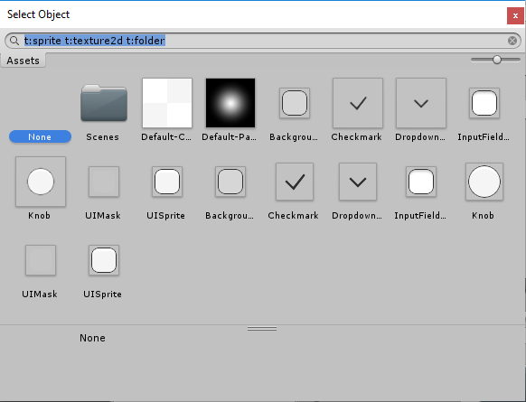
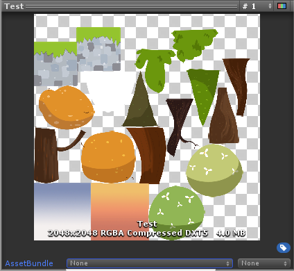

To create the Sprite Atlas Asset, go to Assets > Create > 2D > Sprite Atlas. Unity creates the Sprite Atlas in the Asset folder, with the file extension * .spriteatlas.
选择要添加到“Objects for Packing”列表的项
The Objects for Packing list displays the currently selected items that are in the Sprite Atlas. You can place Texture2D and Sprite Assets in this list. Drag and drop a folder directly onto the list to automatically add all valid content within the folder to the list (only the folder appears on the list).
要选择列表的特定项，请执行以下操作：
选择精灵图集资源，并在其 Inspector 窗口中找到 Objects For Packing 列表。此列表显示 Unity 在构建精灵图集时要打包的一组项。
To add items, select the plus (+) icon at the lower right of the list to create a new row. Drag a valid Asset onto an empty row to add it to the list, or select the circle icon to the right of the row to open the Select Object window. Select an Asset from the Object Picker window to add it to the list:

To remove an item from the list, click the minus (-) icon at the lower right of the Objects For Packing list. To replace an item, drag another item to the row it occupies to replace it on the list.
Select Pack Preview to preview the combined Atlas Texture in the Asset Preview window.

Include in Build
All Sprite Atlases have Include in Build enabled by default when created. This means that Unity includes the Sprite Atlases with the Project’s build and automatically loads them at the build’s run time. Enable or disable the ‘Include in Build’ property to control which Sprite Atlases are included in the Project build.
当 Max Texture Size 值小于精灵图集纹理的当前尺寸时，Unity 会减小打包纹理尺寸以尽可能与设置的 Max Texture Size 匹配，并自动修剪掉任何多余的空白空间。如果选择的一些精灵纹理超过精灵图集的 Max Texture Size 设置，则精灵图集将忽略 Max Texture Size 设置，并保持为了以原始尺寸包含精灵纹理而需要的最小尺寸。
Textures in a Sprite Atlas remain in their original dimensions.
Note: When using Variant Sprite Atlases, selecting a very low scale value (less than 0.25) may result in visual artifacts, depending on the compression format used and original resolution of the Sprite. It is recommended to use high padding values and better compression formats when using Variant Atlases.